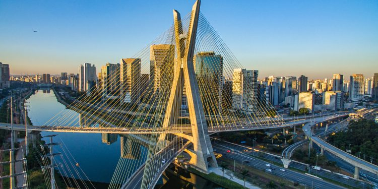
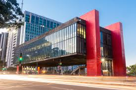
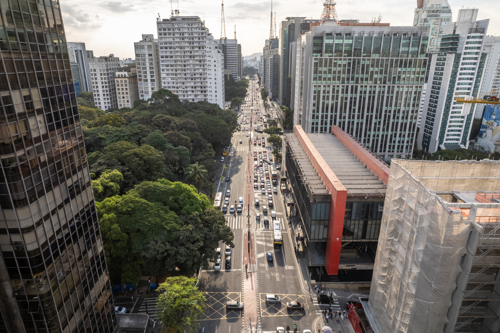
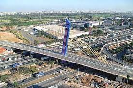
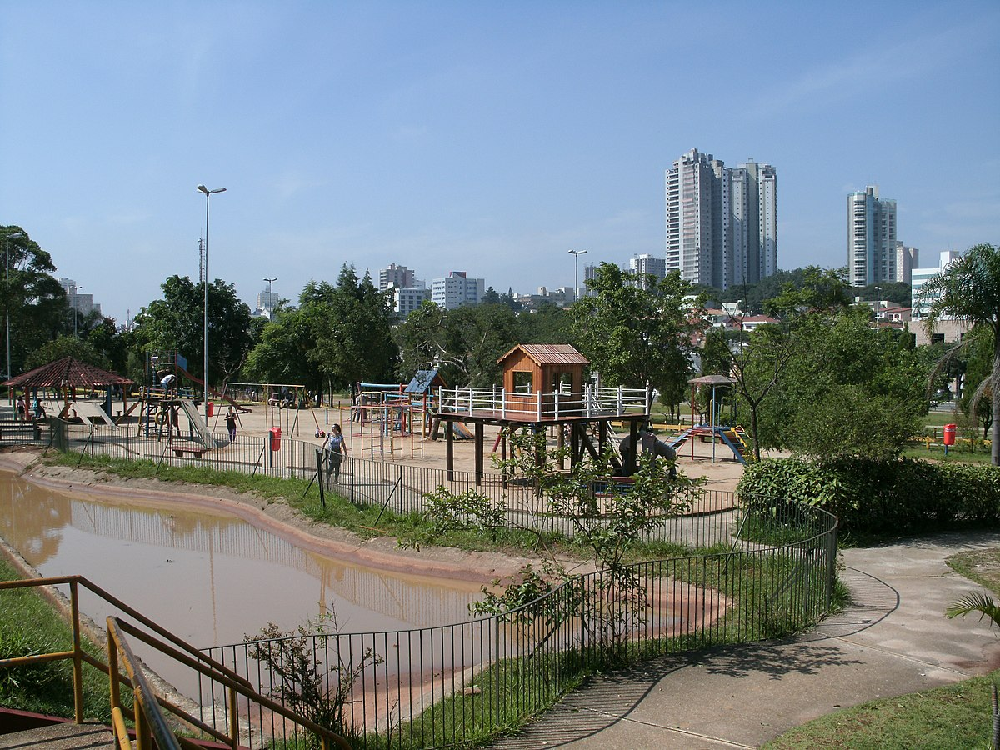
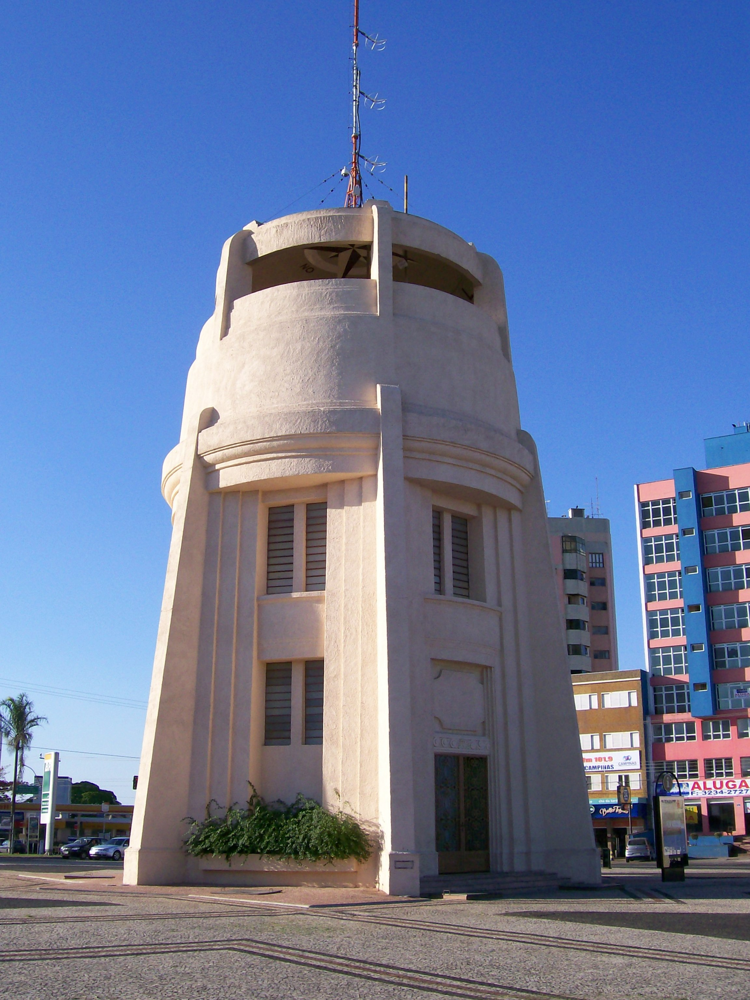
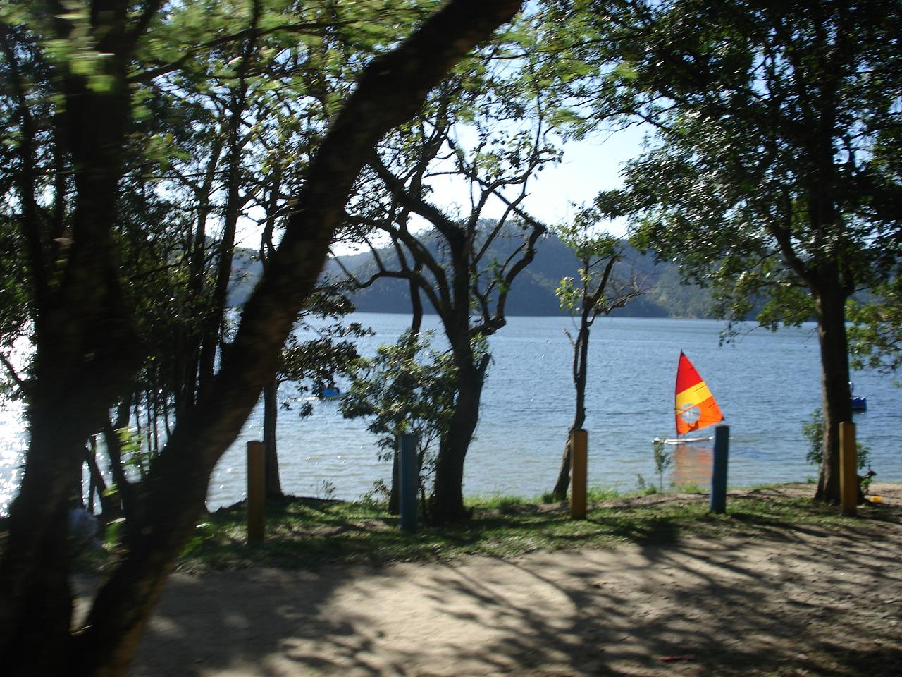

As cinco maiores cidades do estado de São Paulo
1. São Paulo
A maior cidade do Brasil, e centro econômico, financeiro e cultural do país.
População: ~12,3 milhões



Voltar ao topo
Página principal
2. Guarulhos
Guarulhos é a segunda cidade mais populosa do estado de São Paulo.
População: ~1,4 milhões


Voltar ao topo
Página principal
3. Campinas
Campinas é um importante centro tecnológico e universitário.
População: ~1,2 milhões


Voltar ao topo
Página principal
4. São Bernardo do Campo
São Bernardo do Campo é conhecida por sua indústria automobilística.
População: ~844 mil


Voltar ao topo
Página principal
5. Santo André
Santo André é uma cidade com forte presença industrial e comercial.
População: ~721 mil


Voltar ao topo
Página principal